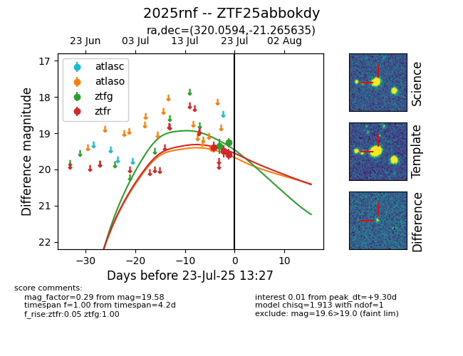

Target ZTF25abbokdy at 2025-07-23 13:27, see:
FINK: fink-portal.org/ZTF25abbokdy
Lasair: lasair-ztf.lsst.ac.uk/objects/ZTF25abbokdy
ALeRCE: alerce.online/object/ZTF25abbokdy
TNS: wis-tns.org/object/2025rnf
YSE: ziggy.ucolick.org/yse/transient_detail/2025rnf
alt names
ZTF25abbokdy (ztf,fink)
2025rnf (tns,yse)
coordinates:
equatorial (ra, dec) = (320.0594,-21.26564)
galactic (l, b) = (27.8603,-41.82268)
photometry
last atlaso=19.41, ztfg=19.26, ztfr=19.58
1 atlaso, 2 ztfg, 3 ztfr detections
